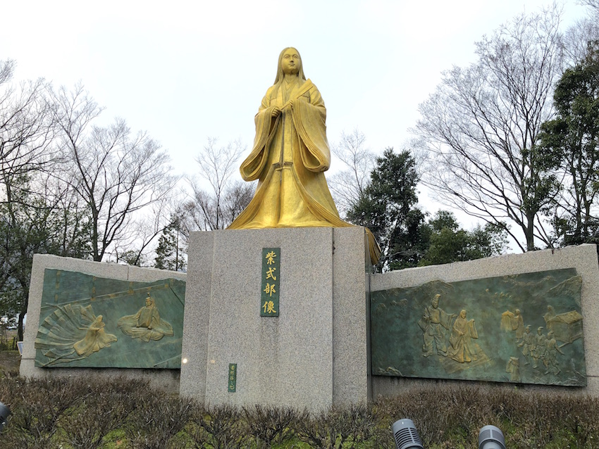
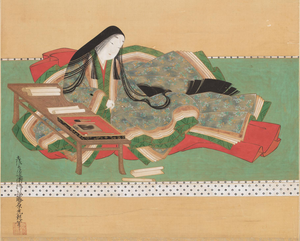
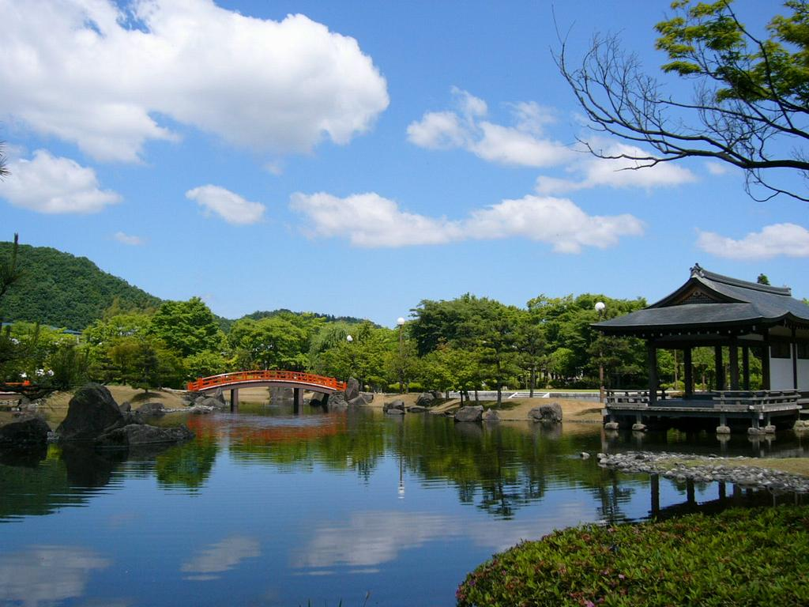

へ ： 平安時代の文学者 金色の紫式部像
一言でいうと？
式部公園にある紫式部の像

武生中央公園近くの「紫式部(むらさきしきぶ)公園」の中で金色にかがやく像。
平安時代の文学者・紫式部の像があります。
紫式部とは？
平安時代の大ヒットセラー『源氏物語』の作者！

紫式部といえば、『源氏物語(げんじものがたり)』の作者として有名です。
そんな紫式部が人生で一度だけ京都を離れて暮らしたのが、今の越前市にあたる武生の国府で、父・藤原為時(ふじわらのためとき)とともにこの地に移り住み、青春時代の約1年半をすごしました。
どんな公園？
平安時代の庭を再現した公園

紫式部や平安時代の国司が過ごした屋敷と、紫式部日記・絵巻に描かれているような風雅な舟遊びができる庭園を、森蘊(もりおさむ)さんを含めた造園史家が研究を重ねたうえで再現(さいげん)したものです。
四季折々違った姿を見ることができる公園で、観光客は少ないですが、その分落ち着いた雰囲気(ふんいき)で楽しむことができます。
越前市東千福町20-369
観光客は少ないですが、その分落ち着いて観光ができる公園です。よく武生中央公園と同じものだと思われることが多いですが、近くにあるだけで別の公園です。紫式部の像は想像よりも色がきれいに出ていて、晴れている時に見るのがおすすめですよ。